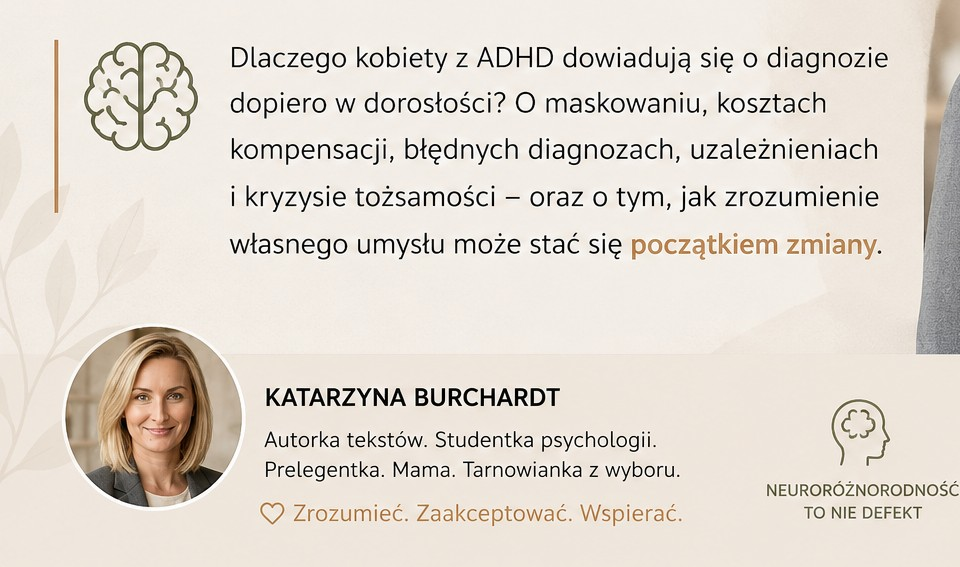

Tworzę standardy dostępności oparte na wiedzy naukowej i doświadczeniu neuroatypowości. Wspieram firmy i instytucje w budowaniu rozwiązań, które są bardziej zrozumiałe, dostępne i przyjazne dla różnorodnych sposobów myślenia.
Nazywam się Katarzyna Burchardt. Jestem studentką I roku Psychologii na Akademii Tarnowskiej, członkinią Stowarzyszenia Osób Dorosłych z ADHD „ATTENTIO”, autorką projektów z zakresu neuroinkluzji oraz prelegentką.
W swojej działalności łączę aktualną wiedzę z obszaru psychologii, neuropsychologii i inkluzji społecznej z praktycznym doświadczeniem osób neuroatypowych. Dzięki temu pomagam organizacjom lepiej rozumieć różnorodność poznawczą oraz tworzyć środowiska pracy i nauki sprzyjające efektywności, dobrostanowi i długofalowemu rozwojowi.
Specjalizuję się w zagadnieniach związanych z ADHD, AuDHD, profilaktyką wypalenia zawodowego oraz budowaniem neuroinkluzyjnych miejsc pracy. Moim celem jest przekładanie wiedzy naukowej na konkretne rozwiązania możliwe do wdrożenia w biznesie, administracji publicznej i sektorze edukacji.
Wierzę, że neuroróżnorodność nie jest wyłącznie wyzwaniem organizacyjnym, lecz także źródłem innowacji, kreatywności i przewagi konkurencyjnej.
Zamiast pojedynczych szkoleń proponuję roczny model mecenatu. To kompleksowy proces obejmujący audyt procesów HR, cykl warsztatów dla managementu oraz stały consulting. Realnie dostosowujemy organizację do standardów neuroinkluzywności.
Dedykowane programy szkoleniowe dla sektora B2G: „Neuroróżnorodny petent w urzędzie” – skuteczne techniki komunikacji i deeskalacji napięcia dla wydziałów obsługi obywatela, oraz „Przeciwdziałanie wykluczeniu społecznemu” – merytoryczne wsparcie dla asystentów rodziny i pracowników socjalnych (MOPS / PCPR).
Ewaluacja i optymalizacja metod egzaminowania, prowadzenia zajęć oraz dostosowywania infrastruktury pod kątem pełnej dostępności poznawczej studentów. Eliminacja barier sensorycznych utrudniających przyswajanie wiedzy.
Doradztwo w zakresie aranżacji fizycznych przestrzeni biurowych, akademickich i urzędowych, systemowo redukujących chroniczne przebodźcowanie.

Publikacja z 1 czerwca 2026 r. omawiająca specyfikę maskowania objawów, zjawisko samoleczenia oraz trudności diagnostyczne na gruncie polskim w oparciu o analizy kliniczne.
Prelekcja zrealizowana w ramach konferencji naukowej organizowanej przez Center for American Studies, skupiająca się na społecznych i ekonomicznych kosztach braku wczesnej diagnozy.
Chętnie odpowiem na pytania dotyczące współpracy, audytów lub szkoleń.
Zadzwoń: +48 513 807 207
lub napisz: kasia.rdt@gmail.com
Bądźmy w kontakcie na LinkedIn:
Katarzyna Burchardt